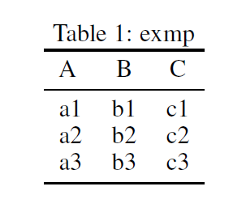
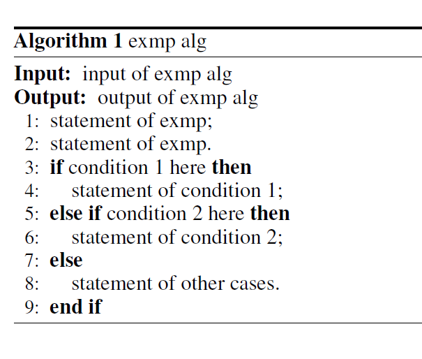

title: LaTeX Floats Reference
date: 2016-05-28 20:43:53
tags:
- Academic
- LaTeX
- Writing
- Reference
This post collects the LaTeX codes of different types of floats (figures, tables, algorithms and graphs) for convenience.
Figures
Simple insertion
\usepackage{graphicx}
\begin{figure}[t]
\begin{center}
\includegraphics[width=0.8\linewidth]{exmp.eps}
\end{center}
\caption{description of figure}
\label{fig:exmp}
\end{figure}
Figure across columns
\usepackage{graphicx}
\begin{figure*}[t]
\begin{center}
\includegraphics[width=0.8\linewidth]{exmp.eps}
\end{center}
\caption{description of figure}
\label{fig:exmp}
\end{figure*}
Multiple figures
Put several figures together. Below is the code of organizing 6 figures in 3 rows and 2 columns.
\usepackage{graphicx}
\usepackage{subcaption}
\begin{figure}[t]
\begin{subfigure}{.48\linewidth}
\centering
\includegraphics[width=\linewidth]{1_1.eps}
\caption{}
\label{Fig:1_1}
\end{subfigure}
\begin{subfigure}{.48\linewidth}
\centering
\includegraphics[width=\linewidth]{1_2.eps}
\caption{}
\label{Fig:1_2}
\end{subfigure} \\
\begin{subfigure}{.48\linewidth}
\centering
\includegraphics[width=\linewidth]{2_1.eps}
\caption{}
\label{Fig:2_1}
\end{subfigure}
\begin{subfigure}{.48\linewidth}
\centering
\includegraphics[width=\linewidth]{2_2.eps}
\caption{}
\label{Fig:2_2}
\end{subfigure} \\
\begin{subfigure}{.48\linewidth}
\centering
\includegraphics[width=\linewidth]{3_1.eps}
\caption{}
\label{Fig:3_1}
\end{subfigure}
\begin{subfigure}{.48\linewidth}
\centering
\includegraphics[width=\linewidth]{3_2.eps}
\caption{}
\label{Fig:3_2}
\end{subfigure}
\caption{description of all figures}
\end{figure}
Tables
Simple table
\usepackage{booktabs}
\begin{table}[t]
\centering
\caption{exmp}
\label{tb:exmp}
\begin{tabular}{lcc}
\toprule
A & B & C \\
\midrule
a1 & b1 & c1 \\
a2 & b2 & c2 \\
a3 & b3 & c3 \\
\bottomrule
\end{tabular}
\end{table}
Results

Complex heading
\usepackage{booktabs}
\usepackage{multirow}
\begin{table*}[t]
\centering
\caption{exmp}
\label{tb:exmp}
\begin{tabular}{c|cccccccc}
\toprule
\multirow{2}{*}{A} & \multicolumn{2}{c}{B} & \multicolumn{2}{c}{C} & \multicolumn{2}{c}{D} & \multicolumn{2}{c}{E}\\
& Bl & Br & Cl & Cr & Dl & Dr & El & Er\\
\midrule
a1 & Bl1 & Br1 & Cl1 & Cr1 & Dl1 & Dr1 & El1 & Er1 \\
a2 & Bl2 & Br2 & Cl2 & Cr2 & Dl2 & Dr2 & El2 & Er2 \\
a3 & Bl3 & Br3 & Cl3 & Cr3 & Dl3 & Dr3 & El3 & Er3 \\
\bottomrule
\end{tabular}
\end{table*}
Results
\usepackage{booktabs}
\usepackage{multirow}
\begin{table}[t]
\centering
\caption{exmp}
\label{tb:exmp}
\begin{tabular}{c|cccccc}
\toprule
\multirow{3}{*}{A} & \multicolumn{4}{c}{B} & \multicolumn{2}{c}{C} \\
& \multicolumn{2}{c}{Bl} & \multicolumn{2}{c}{Br} & \multicolumn{2}{c}{Cm} \\
& Bll & Blr & Brl & Brr & Cml & Cmr \\
\midrule
a1 & Bll1 & Blr1 & Brl1 & Brr1 & Cml1 & Cmr1 \\
a2 & Bll2 & Blr2 & Brl2 & Brr2 & Cml2 & Cmr2 \\
a3 & Bll3 & Blr3 & Brl3 & Brr3 & Cml3 & Cmr3 \\
\bottomrule
\end{tabular}
\end{table}
Results
Algorithms
\usepackage{algorithm}
\usepackage{algorithmic}
\begin{algorithm}[ht]
\caption{exmp alg}
\label{alg:exmp}
\renewcommand{\algorithmicrequire}{\textbf{Input:}}
\renewcommand{\algorithmicensure}{\textbf{Output:}}
\begin{algorithmic}[1]
\REQUIRE input of exmp alg
\ENSURE output of exmp alg
\STATE statement of exmp;
\STATE statement of exmp.
\IF{condition 1 here}
\STATE statement of condition 1;
\ELSIF{condition 2 here}
\STATE statement of condition 2;
\ELSE
\STATE statement of other cases.
\ENDIF
\end{algorithmic}
\end{algorithm}
Results

Graphs
The following examples adopt TikZ package for drawing graphs directly in .tex file.
\usepackage{tikz}
\usetikzlibrary{bayesnet}
\begin{figure}[!ht]
\centering
\begin{tikzpicture}[scale=1.0,transform shape,
state/.style={circle,draw,thick,loop above,inner sep=0,minimum width=10}]
\node[latent] (x1) {$x_{1}$} ; %
\node[latent, below=of x1, xshift=-1.5cm] (x2) {$x_{2}$} ; %
\node[latent, below=of x1, xshift=-0.5cm] (x3) {$x_{3}$} ; %
\node[latent, below=of x1, xshift=0.5cm] (x5) {$x_{5}$} ; %
\node[latent, below=of x1, xshift=1.5cm] (x8) {$x_{8}$} ; %
\edge {x1}{x2, x3, x5, x8} ; %
\node[latent, below=of x2] (x7) {$x_{7}$} ; %
\node[latent, below=of x3] (x4) {$x_{4}$} ; %
\node[latent, below=of x5] (x9) {$x_{9}$} ; %
\node[latent, below=of x8] (x10) {$x_{10}$} ; %
\edge {x2}{x7} ; %
\edge {x3}{x4} ; %
\edge {x5}{x9, x10} ; %
\node[latent, below=of x4] (x6) {$x_{6}$} ; %
\edge {x4}{x6} ; %
\end{tikzpicture}
\caption{exmp}
\label{fig:exmp}
\end{figure}
Results